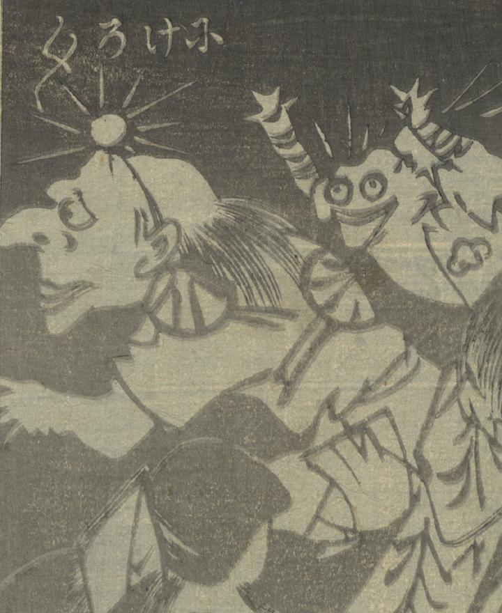

← 图鉴索引

頭に着けた頭襟が光っている天狗。
著作者：楳堂小國政／出典：親書誌：U426_nichibunken_0394：相馬舊御𠩄；ソウマ ノ フルゴショ／日付：2015／資源識別子：U426_nichibunken_0394_0003_0009
Copyright (c)2010- International Research Center for Japanese Studies, Kyoto, Japan. All rights reserved.